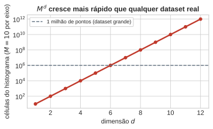
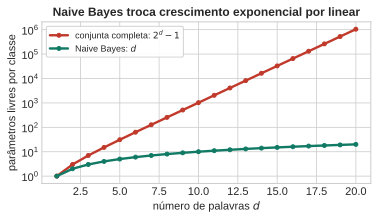
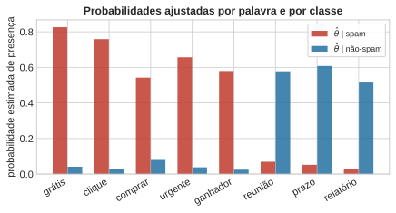
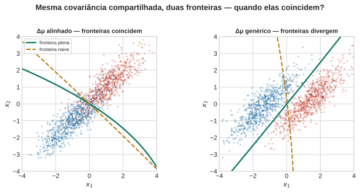
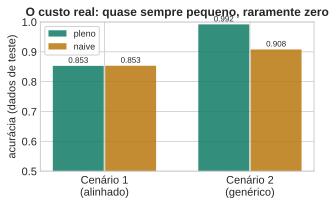

Distribuições Condicionais e Modelos Generativos
Aula 2 — Fundamentos Estatísticos do Aprendizado Supervisionado
1 Abertura — a pergunta que ficou em aberto
A Aula 1 terminou com uma receita que funcionava, provada sem nenhuma suposição de família paramétrica: ajuste uma densidade \(p(x\mid\mathcal{C}_k)\) por classe, pondere pela priori \(\pi_k\), decida pela conjunta maior. A prova não fez nenhuma menção à dimensão de \(x\) — ela continua válida trocando \(x\) por \(\mathbf{x}\in\mathbb{R}^d\).
Então a receita funciona em alta dimensão? É só trocar \(x\) por \(\mathbf{x}\)?
A resposta que quase toda turma dá é sim. E, no sentido estrito, é verdade: a regra “decida pela conjunta maior” continua sendo a decisão ótima. O problema não está na regra. Está em conseguir estimar o objeto do qual ela depende — a densidade condicional de classe — quando esse objeto vive em \(\mathbb{R}^d\) e \(d\) não é pequeno.
2 A maldição da dimensionalidade
Suponha que você tente estimar \(p(\mathbf{x}\mid\mathcal{C}_k)\) do jeito mais ingênuo possível: um histograma multidimensional. Divida cada um dos \(d\) eixos em \(M\) células. O histograma completo tem
\[ M^d \text{ células.} \]
Com \(d=1\), \(M=10\) células bastam para uma resolução razoável. Com \(d=10\), já são \(10^{10}\) células — mais do que qualquer conjunto de dados real terá de pontos. A vasta maioria das células fica vazia, e uma célula vazia não estima densidade alguma; estima zero, o que está quase certamente errado.
NotaO ponto não é “compute mais rápido”
Não é um problema de poder computacional. É um problema de dados: o número de observações necessárias para preencher as células cresce exponencialmente com \(d\), e nenhum orçamento de coleta razoável acompanha isso. A saída não é um histograma mais eficiente — é abandonar o histograma como estratégia de estimação em alta dimensão.
Isto é exatamente a promessa que a Aula 1 fez ao fechar (PRML §1.4, pp. 33–38; DLFC §6.1.1, pp. 172–174, tratamento moderno): sem impor nenhuma estrutura sobre \(p(\mathbf{x}\mid\mathcal{C}_k)\), ela não é estimável com dados finitos a partir de \(d\) moderado.
3 Bayes formal para \(K\) classes
Tudo que a Aula 1 construiu para duas classes generaliza sem atrito para \(K\) classes \(\mathcal{C}_1,\dots,\mathcal{C}_K\) (PRML §1.2, pp. 14–24; DLFC §2.1.2, pp. 26–28, mesma base usada na Aula 1). A regra da soma dá a marginal, a regra do produto dá o Teorema de Bayes:
\[ p(\mathcal{C}_k \mid \mathbf{x}) \;=\; \frac{p(\mathbf{x}\mid\mathcal{C}_k)\,\pi_k}{\sum_{j=1}^K p(\mathbf{x}\mid\mathcal{C}_j)\,\pi_j}, \qquad \pi_k = p(\mathcal{C}_k). \]
A regra de decisão que minimiza a probabilidade de erro continua sendo “decida pela conjunta maior”: \(\arg\max_k p(\mathbf{x}\mid\mathcal{C}_k)\,\pi_k\). A prova da Aula 1 foi ponto a ponto e nunca usou \(K=2\) como hipótese — ela generaliza para \(K\) classes exatamente do mesmo jeito.
O modelo generativo por trás disto tem uma leitura em duas etapas: primeiro a natureza sorteia uma classe segundo \(\pi_k\), depois sorteia \(\mathbf{x}\) segundo \(p(\mathbf{x}\mid\mathcal{C}_k)\).
flowchart LR
pi["priori π_k"] --> esc["a natureza escolhe 𝒞_k"]
esc --> x["gera x ~ p(x ∣ 𝒞_k)"]
O diagrama acima é o modelo generativo: primeiro a classe, depois os atributos, condicionados na classe. Todo o resto da aula é sobre como modelar essa segunda etapa — \(p(\mathbf{x}\mid\mathcal{C}_k)\) — quando \(\mathbf{x}\) tem muitas coordenadas.
4 Naive Bayes: a suposição estrutural
O exemplo canônico: classificar um e-mail como spam a partir da presença ou ausência de \(d\) palavras de um vocabulário, \(\mathbf{x} \in \{0,1\}^d\). Modelar \(p(\mathbf{x}\mid\mathcal{C}_k)\) sem estrutura significa modelar a distribuição conjunta de \(d\) variáveis binárias — um objeto com \(2^d - 1\) parâmetros livres por classe (o \(-1\) vem da restrição de que as \(2^d\) probabilidades somam 1). Para \(d=20\) palavras, isso já é mais de um milhão de parâmetros por classe, para um vocabulário de brinquedo.
Naive Bayes é a suposição mais brutal possível para resolver isso: independência condicional entre atributos, dada a classe (PRML §1.5.4, eqs. 1.84–1.85, p. 46; DLFC §5.3, §5.3.1–5.3.2, pp. 150–156):
\[ p(\mathbf{x}\mid\mathcal{C}_k) \;=\; \prod_{i=1}^d p(x_i \mid \mathcal{C}_k). \]
flowchart TD
C(("𝒞_k")) --> x1["x₁ (\"grátis\")"]
C --> x2["x₂ (\"reunião\")"]
C --> x3["x₃ (\"urgente\")"]
C --> xd["x_d"]
O diagrama não tem nenhuma seta entre os \(x_i\) — essa ausência é a suposição inteira, desenhada. Ela troca \(2^d-1\) parâmetros por \(d\): linear em vez de exponencial.

Um exemplo numérico pequeno, para tornar concreto. Vocabulário de 8 palavras; cada palavra tem uma probabilidade de aparecer dado spam e dado não-spam. Simulamos e-mails e ajustamos essas probabilidades por contagem.

ImportanteA mesma armadilha da Aula 1, em outra forma
Se alguma palavra nunca aparecer nos e-mails de uma classe na amostra de treino, a contagem bruta dá \(\hat\theta = 0\), e um único e-mail de teste com essa palavra zera o produto inteiro — \(\ln 0 = -\infty\), exatamente o problema dos zeros exatos na Beta da Aula 1, só que aqui em forma discreta. A correção padrão é a suavização de Laplace: somar 1 ao numerador e 2 ao denominador (equivalente a uma priori Beta\((1,1)\) sobre cada \(\theta_i\)), garantindo \(0 < \hat\theta < 1\) sempre. É por isso que o ajuste acima já usa a versão suavizada.
Com as probabilidades ajustadas, a regra de decisão para um e-mail novo \(\mathbf{x}\) é comparar
\[ \log\frac{p(\text{spam}\mid\mathbf{x})}{p(\text{não-spam}\mid\mathbf{x})} \;=\; \log\frac{\pi_{\text{spam}}}{\pi_{\text{ham}}} \;+\; \sum_{i=1}^d \left[ x_i \log\frac{\theta^{\text{spam}}_i}{\theta^{\text{ham}}_i} + (1-x_i)\log\frac{1-\theta^{\text{spam}}_i}{1-\theta^{\text{ham}}_i}\right] \]
contra zero. Guarde esta fórmula — o Bloco de teoria da decisão vai mostrar que ela é linear em \(\mathbf{x}\), e por que isso não é coincidência.
5 O preço da suposição
Palavras correlacionadas existem — “grátis” e “ganhador” tendem a aparecer juntas. Naive Bayes finge que não. A pergunta honesta: o que essa suposição falsa custa?
Para responder com precisão, trocamos o exemplo discreto por um contínuo, onde dá para desenhar a fronteira: dois atributos reais e correlacionados, duas classes com a mesma matriz de covariância \(\Sigma\) (não-diagonal). Ajustamos dois classificadores à mesma amostra:
- pleno: estima a covariância completa \(\Sigma\) por classe (PRML §4.2.1, pp. 198–200);
- naive: estima só a diagonal de \(\Sigma\) — as variâncias marginais, descartando a correlação (PRML §4.2.3, eqs. 4.81–4.82, p. 202, versão contínua do mesmo princípio usado no spam).

O painel da esquerda usa \(\Delta\boldsymbol\mu = \boldsymbol\mu_A-\boldsymbol\mu_B \propto (1,1)\) — um autovetor da matriz equicorrelacionada \(\Sigma\) (o outro autovetor é \((1,-1)\)). Nesse caso, a fronteira naive e a fronteira plena são a mesma reta: a suposição de independência não custou nada em termos de fronteira, mesmo estimando a covariância errada. O painel da direita usa um \(\Delta\boldsymbol\mu\) genérico, fora dos dois autovetores, e as fronteiras divergem visivelmente.
NotaA condição exata (verificável por conta própria)
Para duas gaussianas com priori igual e covariância \(\Sigma\) compartilhada, a fronteira plena tem direção \(\Sigma^{-1}\Delta\boldsymbol\mu\) e a naive tem direção \(D^{-1}\Delta\boldsymbol\mu\), com \(D=\text{diag}(\Sigma)\). As duas coincidem em direção se e somente se \(\Delta\boldsymbol\mu\) é autovetor de \(\Sigma D^{-1}\). Isso é uma propriedade de onde as médias das classes estão relativas aos eixos de correlação — não algo que se possa garantir em geral. Mesmo quando as fronteiras coincidem, vale registrar: as posterioris ainda podem diferir (a naive superestima ou subestima a confiança, mesmo decidindo certo).
Em qualquer um dos dois cenários, o que importa na prática é a acurácia, não a coincidência exata das fronteiras:

A lição não é “Naive Bayes está sempre certo por sorte”. É que a diferença de acurácia entre a fronteira certa e a fronteira naive depende de o quanto elas divergem — e a divergência é geométrica, não é uma propriedade fixa da suposição de independência. Em muitos problemas reais de alta dimensão, pequenas divergências de fronteira individuais se cancelam parcialmente ao somar sobre muitos atributos, o que ajuda a explicar por que Naive Bayes tende a funcionar melhor na prática do que a suposição “deveria” permitir — sem que isso signifique que a suposição virou verdadeira.
O próprio PRML registra essa mesma ressalva, na seção que também dá nome ao grafo do Naive Bayes (§8.2.2, p. 381):
“Nevertheless, even if this assumption is not precisely satisfied, the model may still give good classification performance in practice because the decision boundaries can be insensitive to some of the details in the class-conditional densities.”
6 Teoria da decisão, e quando ela é linear
A Aula 1 tratou teoria da decisão de forma ad-hoc: duas classes, perda 0-1 ou uma matriz \(2\times2\) com custos escalares \(c_{\mathrm{I}}, c_{\mathrm{II}}\). Chegou a hora de nomear o objeto geral — ele vale para \(K\) classes, para perdas arbitrárias, e explica por que as fronteiras do bloco anterior saíram retas.
6.1 O objeto geral
Uma regra de decisão \(\delta\) mapeia cada observação \(\mathbf{x}\) para uma ação \(a \in \mathcal{A}\) — o espaço de ações, que não precisa coincidir com o espaço de classes \(\mathcal{Y}=\{\mathcal{C}_1,\dots,\mathcal{C}_K\}\). A opção de rejeição da Aula 1 já era um exemplo de \(\mathcal{A}\neq\mathcal{Y}\): \(\mathcal{A} = \mathcal{Y}\cup\{\text{recusar}\}\).
Dada uma função de perda \(L:\mathcal{Y}\times\mathcal{A}\to\mathbb{R}\) (\(L(k,a)\) = custo de tomar a ação \(a\) quando a verdade é \(\mathcal{C}_k\)), o risco posterior de uma ação \(a\) em \(\mathbf{x}\) é
\[ \rho(a\mid\mathbf{x}) \;=\; \sum_{k=1}^K L(k,a)\, p(\mathcal{C}_k\mid\mathbf{x}). \]
A regra que minimiza a perda esperada global minimiza \(\rho(a\mid\mathbf{x})\) ponto a ponto (PRML §1.5, §1.5.2–1.5.3, pp. 38–42, agora em sua forma geral — o mesmo argumento ponto a ponto que provou a Aula 1):
\[ \boxed{\;\delta^\star(\mathbf{x}) = \arg\min_{a\in\mathcal{A}} \rho(a\mid\mathbf{x})\;} \]
6.2 O caso binário recupera exatamente a Aula 1
Com \(\mathcal{A}=\mathcal{Y}=\{\mathcal{C}_A,\mathcal{C}_B\}\), perda \(L(A,A)=L(B,B)=0\), \(L(A,B)=c_{\mathrm{I}}\), \(L(B,A)=c_{\mathrm{II}}\): comparar \(\rho(A\mid\mathbf{x})\) com \(\rho(B\mid\mathbf{x})\) dá exatamente
\[ c_{\mathrm{I}}\,p(\mathbf{x}\mid\mathcal{C}_A)\,\pi_A \;\gtrless\; c_{\mathrm{II}}\,p(\mathbf{x}\mid\mathcal{C}_B)\,\pi_B \qquad\Longleftrightarrow\qquad \frac{p(\mathbf{x}\mid\mathcal{C}_B)}{p(\mathbf{x}\mid\mathcal{C}_A)} \gtrless \frac{c_{\mathrm{I}}\,\pi_A}{c_{\mathrm{II}}\,\pi_B}. \]
Toda regra de decisão binária é um teste de razão de verossimilhanças contra um limiar que depende só de custo e priori — nunca de \(\mathbf{x}\). Isso é o que a Aula 1 fez sem nomear; agora tem nome.
6.3 Quando essa razão é linear em \(\mathbf{x}\)
A pergunta que o bloco anterior deixou pendente. Para as gaussianas com covariância \(\Sigma\) compartilhada entre classes (pleno ou naive — a distinção não importa aqui, só importa que a mesma \(\Sigma\) vale para as duas classes):
\[ \log\frac{p(\mathbf{x}\mid\mathcal{C}_A)}{p(\mathbf{x}\mid\mathcal{C}_B)} = \log\frac{\pi_A}{\pi_B} - \tfrac12(\mathbf{x}-\boldsymbol\mu_A)^\top\Sigma^{-1}(\mathbf{x}-\boldsymbol\mu_A) + \tfrac12(\mathbf{x}-\boldsymbol\mu_B)^\top\Sigma^{-1}(\mathbf{x}-\boldsymbol\mu_B). \]
Expandindo os quadrados, o termo \(\mathbf{x}^\top\Sigma^{-1}\mathbf{x}\) aparece duas vezes com sinais opostos e cancela exatamente — porque \(\Sigma\) é a mesma nos dois termos. Sobra
\[ \boxed{\;\mathbf{x}^\top\Sigma^{-1}(\boldsymbol\mu_A-\boldsymbol\mu_B) + \text{const}\;} \]
— linear em \(\mathbf{x}\). É por isso que as duas fronteiras do bloco anterior eram retas em ambos os painéis: a linearidade vem de a covariância ser compartilhada, não de qual covariância (plena ou diagonal) foi usada. A naive só erra a direção do vetor de coeficientes (\(D^{-1}\Delta\boldsymbol\mu\) em vez de \(\Sigma^{-1}\Delta\boldsymbol\mu\)), nunca o fato de ser linear.
O mesmo mecanismo explica a fórmula do spam no bloco anterior: com atributos binários, o log da razão soma um termo por palavra — linear em \(\mathbf{x}\) pela mesma razão estrutural, agora em atributos discretos (PRML §4.2.3, eqs. 4.81–4.82, p. 202; §4.2, eqs. 4.57–4.63, pp. 196–198, para a leitura via softmax no caso de \(K\) classes). Este é exatamente o discriminante que a Aula 6 (regressão logística) vai construir de novo, por um caminho diferente — sem passar por densidades condicionais.
6.4 Generalizando: \(K\) classes, matriz \(K\times K\), rejeição
Com \(K\) classes e uma matriz de perda \(K\times K\) arbitrária, nada muda na regra \(\delta^\star(\mathbf{x}) = \arg\min_a \rho(a\mid\mathbf{x})\) — só a soma em \(\rho\) passa a ter \(K\) termos. A opção de rejeição (PRML §1.5.3, p. 42) é o caso \(\mathcal{A}=\mathcal{Y}\cup\{\text{recusar}\}\), \(L(k,\text{recusar})=\lambda\) para todo \(k\): recusar quando nenhuma classe tem risco posterior menor que \(\lambda\).
6.5 Risco de Bayes
\[ R^\star \;=\; \mathbb{E}_{\mathbf{X}}\!\left[\min_{a\in\mathcal{A}} \rho(a\mid\mathbf{X})\right] \]
generaliza o erro de Bayes da Aula 1 (que era o caso particular de perda 0-1) para perda arbitrária: é o menor risco esperado possível, dado o modelo verdadeiro — nenhuma regra de decisão, por mais sofisticada, faz melhor.
6.6 A ressalva que fecha o loop com o bloco anterior
“Dado o modelo verdadeiro” é a palavra que importa. A regra de Bayes é ótima se \(p(\mathcal{C}_k\mid\mathbf{x})\) estiver certa. O bloco anterior mostrou Naive Bayes estimando essa posteriori errada — a covariância diagonal não é a covariância real — e ainda assim classificando quase tão bem quanto o modelo certo, no cenário alinhado até exatamente tão bem. Teoria da decisão garante a otimalidade da regra dado o modelo; não garante que o modelo esteja certo. São duas perguntas diferentes, e confundi-las é o erro mais comum ao avaliar um classificador generativo.
7 Fechamento e ponte
Três frases resumem a aula:
- A regra da Aula 1 generaliza sem atrito para \(K\) classes — o que não generaliza de graça é a estimação da densidade em alta dimensão.
- Naive Bayes troca \(2^d-1\) parâmetros por \(d\), impondo independência condicional dada a classe — falsa em geral, mas o custo em acurácia depende da geometria (o quanto \(\Delta\boldsymbol\mu\) se desvia dos eixos de correlação), não é fixo.
- Teoria da decisão dá a regra ótima dado o modelo, não garante que o modelo esteja certo — e a linearidade das fronteiras vem de covariância compartilhada, não da suposição de independência em si.
Ponte para a Aula 3
Naive Bayes e a fronteira linear gaussiana compartilham uma limitação: a forma da fronteira é decidida antes de ver os dados — linear, sempre, por construção. Árvores de decisão (Aula 3) particionam o espaço de outro jeito: sem suposição paramétrica sobre \(p(\mathbf{x}\mid\mathcal{C}_k)\), construindo a fronteira greedily a partir dos próprios dados. O preço dessa liberdade — e onde ela também pode custar caro — é o assunto de lá.